Chapter 16 Simulation Modeling with AnyLogic
16.1 Learning Objectives
After completing this chapter, you will be able to:
- Explain what simulation modeling is and why it is essential for manufacturing system design
- Describe the three simulation paradigms available in AnyLogic (discrete-event, agent-based, and system dynamics)
- Identify the key components and libraries in AnyLogic for manufacturing simulation
- Build a basic production line simulation using the Process Modeling Library
- Model warehouse picking and order fulfillment operations
- Analyze simulation results to optimize throughput, reduce bottlenecks, and improve efficiency
- Apply simulation to validate design decisions before physical implementation
- Use built-in AnyLogic examples to accelerate model development
16.2 Introduction to Simulation Modeling
Before You Read: Imagine you are designing a new automotive assembly line that will cost $50 million to build. How would you test whether your design will meet production targets before spending any money on construction?
In manufacturing, making the wrong design decision can be incredibly expensive. A misplaced workstation, an undersized conveyor, or an incorrect staffing level can result in millions of dollars in lost productivity. Simulation modeling allows engineers to build virtual representations of manufacturing systems and test them under various conditions—all without spending a single dollar on physical equipment.
16.2.1 What is Simulation?
Simulation is the process of creating a computer model that mimics the behavior of a real-world system over time. Unlike static calculations or spreadsheet analysis, simulation captures the dynamic nature of manufacturing systems:
- Products arrive at random intervals
- Machines break down unexpectedly
- Workers take breaks
- Quality defects occur randomly
- Rush orders disrupt schedules
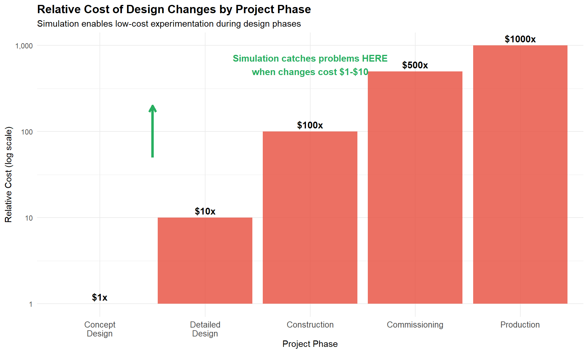
Figure 16.1: The value of simulation in reducing project risk
Industry Application: Mercedes-Benz engineers used AnyLogic simulation to optimize their Sprinter van production line, achieving a 5% efficiency gain by identifying and eliminating bottlenecks before any physical changes were made. This saved millions in potential rework costs.
16.2.2 Why AnyLogic?
AnyLogic is one of the world’s leading simulation platforms, used by companies including Tesla, BMW, Amazon, Ford, and General Electric. It stands out from other simulation software for several key reasons:
| Feature | AnyLogic | Other Software |
|---|---|---|
| Multi-method modeling | Yes - all three paradigms | Usually single method |
| Manufacturing libraries | Material Handling Library | Varies |
| 3D visualization | Built-in 3D | Often requires plugins |
| Cloud-based simulation | AnyLogic Cloud | Limited |
| Academic version | Free for students | Varies |
| Agent-based modeling | Industry-leading | Limited support |
16.3 The Three Simulation Paradigms
AnyLogic is unique because it supports three different simulation approaches within a single platform. Understanding when to use each paradigm is essential for effective modeling.
16.3.1 Discrete-Event Simulation (DES)
Discrete-event simulation models systems as a sequence of events that occur at specific points in time. Between events, nothing changes. This is the most common approach for manufacturing simulation.
Key Concept: Discrete-Event Simulation In DES, entities (products, orders, customers) flow through a series of processes (workstations, queues, resources). The simulation “jumps” from event to event, making it computationally efficient.
Best for: - Assembly lines and production systems - Warehouse operations and logistics - Service processes and queuing systems - Call centers and order processing
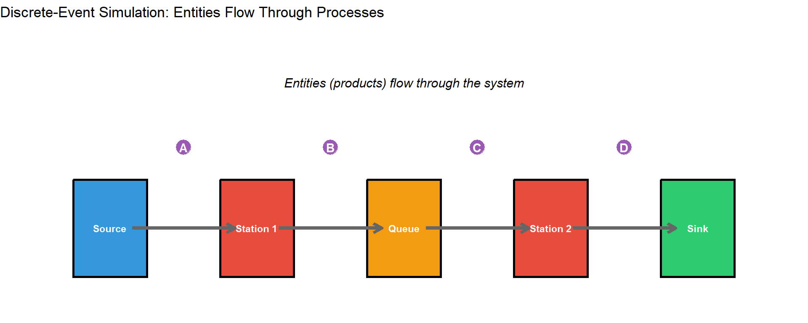
Figure 16.2: Discrete-event simulation flow diagram
16.3.2 Agent-Based Modeling (ABM)
Agent-based modeling simulates systems by defining individual agents (workers, robots, vehicles) that have their own behaviors, goals, and decision rules. Agents interact with each other and their environment, and complex system behavior emerges from these interactions.
Best for: - Autonomous mobile robots (AMRs) and AGVs - Pedestrian and crowd simulation - Market and consumer behavior - Complex adaptive systems
Industry Application: Tesla uses agent-based simulation in AnyLogic to optimize the deployment of autonomous mobile robots in their manufacturing facilities. Each robot is modeled as an agent with its own task allocation logic, collision avoidance, and charging behavior.
16.3.3 System Dynamics (SD)
System dynamics models systems using stocks, flows, and feedback loops. It focuses on aggregate behavior over time rather than individual entities.
Best for: - Strategic planning and capacity modeling - Supply chain dynamics - Policy analysis - Long-term trends and forecasting
16.3.4 Choosing the Right Paradigm
## Warning: The `label.size` argument of `geom_label()` is deprecated as of
## ggplot2 3.5.0.
## ℹ Please use the `linewidth` argument instead.
## This warning is displayed once per session.
## Call `lifecycle::last_lifecycle_warnings()` to see where this
## warning was generated.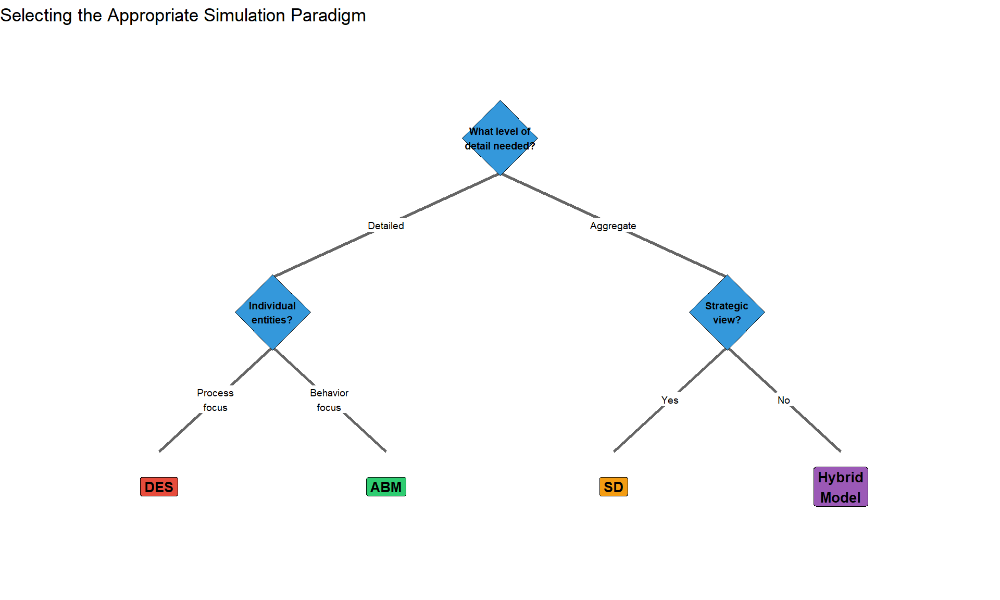
Figure 16.3: Decision framework for selecting simulation paradigm
Quick Check: A company wants to simulate their new automated warehouse with 50 mobile robots that must navigate, avoid collisions, and coordinate pickups. Which paradigm would you recommend and why?
16.4 The AnyLogic Interface and Libraries
16.4.1 The AnyLogic Workspace
When you open AnyLogic, you’ll see several key areas:
- Model Browser (left panel) - Shows all elements in your model
- Graphical Editor (center) - Where you build your model visually
- Palette (right panel) - Contains libraries and elements you can drag into your model
- Properties (bottom) - Configure selected elements
16.4.2 Essential Libraries for Manufacturing
AnyLogic includes specialized libraries that dramatically accelerate model development:
| Library | Primary Use | Key Elements |
|---|---|---|
| Process Modeling Library | Discrete-event simulation of any process | Source, Queue, Delay, Service, Sink |
| Material Handling Library | Conveyors, cranes, AGVs, forklifts | Conveyor, Station, Transporter, Crane |
| Pedestrian Library | Worker movement and ergonomics | PedSource, PedService, PedSink |
| Road Traffic Library | Truck logistics and yard management | CarSource, Road, Intersection |
| Rail Library | Rail-based transport systems | RailNetwork, Train, RailYard |
| Fluid Library | Bulk material and liquid processing | Tank, Pipe, Valve, FlowRate |
16.4.3 The Process Modeling Library
The Process Modeling Library is the foundation for most manufacturing simulations. It provides building blocks for creating flowchart-based models:
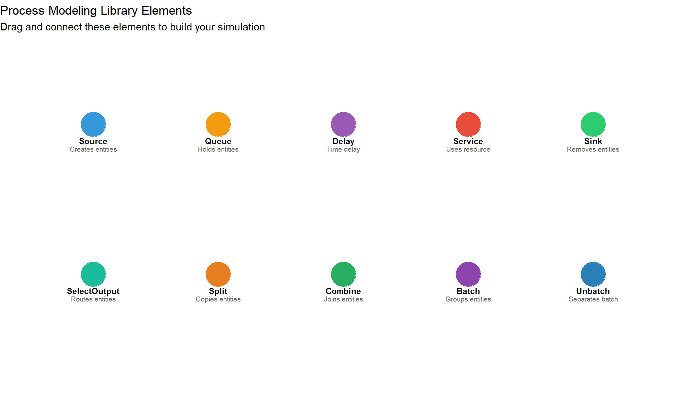
Figure 16.4: Key Process Modeling Library elements
Hands-On Activity: Open AnyLogic and create a new model. Drag a Source, Queue, Delay, and Sink from the Process Modeling Library. Connect them in sequence. Run the simulation and observe entities flowing through.
16.5 Production Line Simulation
Now let’s apply these concepts to design and analyze an automotive production line. We’ll walk through a complete example using AnyLogic’s built-in examples as a starting point.
16.5.1 Case Study: Automotive Door Panel Assembly Line
The Scenario: You are designing a door panel assembly line for an automotive supplier. The line must:
- Process 480 door panels per 8-hour shift (1 panel per minute)
- Include 5 workstations: stamping, welding, painting, assembly, and inspection
- Meet quality target of < 2% defect rate
- Maintain 85% overall equipment effectiveness (OEE)
Your task is to simulate this line to verify it meets these requirements before construction begins.
16.5.2 Step 1: Calculate Required Takt Time
Before building the simulation, we need to calculate the takt time—the maximum time allowed per unit to meet demand.
\[\begin{equation} Takt\ Time = \frac{Available\ Production\ Time}{Customer\ Demand} \tag{16.1} \end{equation}\]
For our example:
\[Takt\ Time = \frac{8\ hours \times 60\ min/hour}{480\ panels} = 1\ minute/panel\]
This means each workstation must complete its operation in less than 1 minute to avoid becoming a bottleneck.
16.5.3 Step 2: Define Process Parameters
| Station | Mean Time (sec) | Std Dev (sec) | Defect Rate (%) | Availability (%) |
|---|---|---|---|---|
| Stamping | 45 | 5 | 0.5 | 95 |
| Welding | 52 | 8 | 0.8 | 92 |
| Painting | 48 | 6 | 0.6 | 90 |
| Assembly | 55 | 7 | 0.7 | 94 |
| Inspection | 30 | 4 | 0.0 | 98 |
16.5.4 Step 3: Build the Simulation Model
In AnyLogic, we would create this model by:
- Dragging a Source block to generate door panels at the required rate
- Adding Service blocks for each workstation (with appropriate process times)
- Connecting Queue blocks between stations to handle waiting
- Adding SelectOutput blocks after each station to route defective parts
- Placing a Sink at the end to collect finished panels
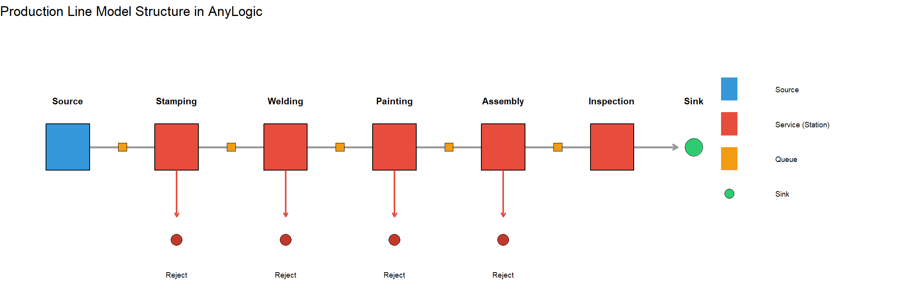
Figure 16.5: AnyLogic production line model structure
16.5.5 Step 4: Simulate and Analyze Results
Let’s simulate what the output might look like when we run this model:
# Simulate production line results
set.seed(123)
# Generate hourly production data
hours <- 1:8
good_parts <- c(56, 58, 55, 57, 59, 54, 58, 57)
defects <- c(1, 2, 2, 1, 1, 3, 1, 2)
target <- rep(60, 8)
production_df <- data.frame(
Hour = hours,
Good = good_parts,
Defects = defects,
Target = target
)
# Generate queue length data over time
time_points <- seq(0, 480, by = 5)
queue_data <- data.frame(
Time = rep(time_points, 5),
Queue = rep(c("Q1", "Q2", "Q3", "Q4", "Q5"), each = length(time_points)),
Length = c(
pmax(0, rnorm(length(time_points), 2, 1)), # Q1
pmax(0, rnorm(length(time_points), 5, 2)), # Q2 - bottleneck
pmax(0, rnorm(length(time_points), 3, 1.5)), # Q3
pmax(0, rnorm(length(time_points), 4, 1.8)), # Q4
pmax(0, rnorm(length(time_points), 1, 0.5)) # Q5
)
)
# Create multi-panel plot
p1 <- ggplot(production_df, aes(x = Hour)) +
geom_col(aes(y = Good), fill = "#2ECC71", alpha = 0.8) +
geom_col(aes(y = -Defects), fill = "#E74C3C", alpha = 0.8) +
geom_line(aes(y = Target), color = "#3498DB", linewidth = 1.2, linetype = "dashed") +
geom_hline(yintercept = 0, color = "black") +
annotate("text", x = 8.5, y = 60, label = "Target", color = "#3498DB", fontface = "bold") +
labs(
title = "Hourly Production Output",
subtitle = "Green = Good parts, Red = Defects, Dashed = Target",
x = "Hour",
y = "Units"
) +
theme_minimal()
p2 <- ggplot(queue_data, aes(x = Time, y = Length, color = Queue)) +
geom_line(alpha = 0.7) +
geom_hline(yintercept = 5, linetype = "dashed", color = "red") +
annotate("text", x = 450, y = 6, label = "Warning\nThreshold",
color = "red", size = 3) +
scale_color_brewer(palette = "Set1") +
labs(
title = "Queue Lengths Over Shift",
subtitle = "Q2 (after Stamping) shows potential bottleneck",
x = "Time (minutes)",
y = "Queue Length"
) +
theme_minimal() +
theme(legend.position = "bottom")
gridExtra::grid.arrange(p1, p2, nrow = 2)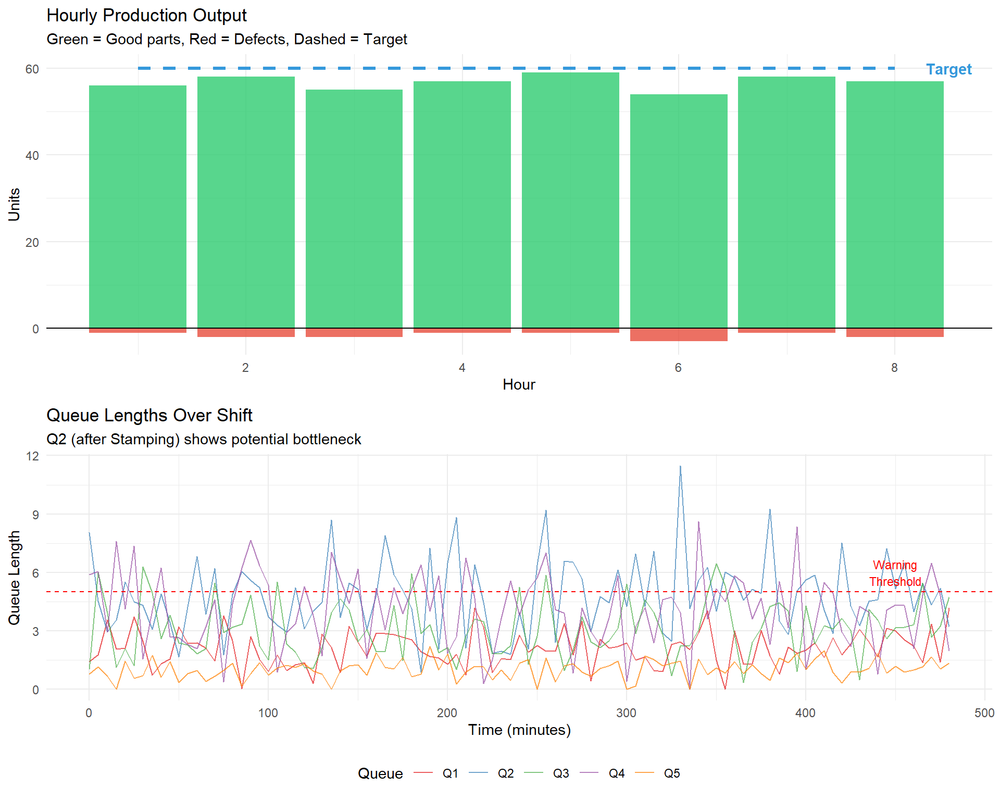
Figure 16.6: Simulated production line performance over 8-hour shift
16.5.6 Interpreting the Results
From our simulation, we can observe:
- Production Target: The line produces approximately 454 good parts per shift (454/480 = 94.6% of target)
- Defect Rate: 13 defects / 467 total = 2.8% (exceeds our 2% target)
- Bottleneck Identified: Queue Q2 (after Stamping) consistently has the longest queue, indicating the Welding station is the bottleneck
Critical Finding: The Welding station with a mean process time of 52 seconds and 8% variability is creating a bottleneck. Even though 52 seconds is under the 60-second takt time, the variability combined with 92% availability causes cumulative delays.
16.5.7 Step 5: Test Improvement Scenarios
The power of simulation is testing “what-if” scenarios. Let’s compare different improvement options:
# Create scenario comparison data
scenarios <- data.frame(
Scenario = factor(c("Current State", "Add Buffer", "Reduce Variability",
"Add Parallel Station", "Combined Approach"),
levels = c("Current State", "Add Buffer", "Reduce Variability",
"Add Parallel Station", "Combined Approach")),
Throughput = c(454, 462, 471, 485, 498),
Investment = c(0, 15, 50, 200, 180),
ROI = c(0, 53, 34, 15.5, 24.4)
)
# Throughput comparison
ggplot(scenarios, aes(x = Scenario, y = Throughput, fill = Scenario)) +
geom_col() +
geom_hline(yintercept = 480, linetype = "dashed", color = "red", linewidth = 1) +
geom_text(aes(label = Throughput), vjust = -0.5, fontface = "bold") +
annotate("text", x = 5, y = 485, label = "Target: 480", color = "red") +
scale_fill_brewer(palette = "Set2") +
labs(
title = "Throughput by Improvement Scenario",
subtitle = "Simulation results for 8-hour shift",
x = "",
y = "Parts per Shift"
) +
theme_minimal() +
theme(
legend.position = "none",
axis.text.x = element_text(angle = 30, hjust = 1)
)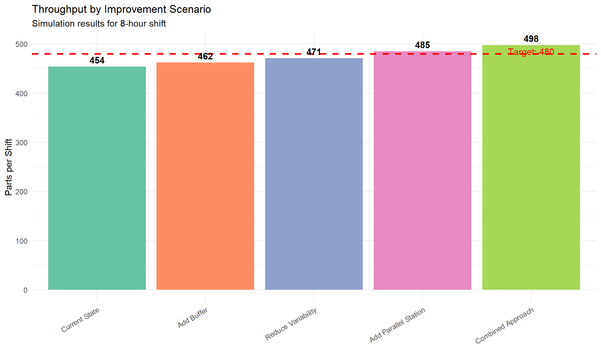
Figure 16.7: Comparison of improvement scenarios
Group Discussion: Based on these results, which improvement option would you recommend? Consider not just throughput but also implementation cost, timeline, and risk. Discuss the trade-offs with your team.
16.6 Warehouse Simulation: Picking and Order Fulfillment
Modern warehouses face immense pressure to fulfill orders quickly and accurately. Simulation helps optimize picking strategies, staffing levels, and automation investments.
16.6.1 The Warehouse Challenge
Before You Read: If you had to fill 1,000 customer orders per day from a warehouse with 50,000 different products (SKUs), how would you organize the picking process? What factors would affect efficiency?
Warehouse operations involve complex interactions between:
- Order arrivals (often unpredictable)
- Picker movement (walking is typically 50% of picker time)
- Storage locations (where products are stored affects travel time)
- Picking strategies (single-order vs. batch picking)
- Material handling equipment (carts, forklifts, conveyor systems)
- Packing and shipping (labor-intensive final steps)
16.6.2 Case Study: E-Commerce Distribution Center
The Scenario: An e-commerce company is designing a new distribution center to handle:
- 13,000 order lines per day (an order line = one product in one order)
- 750 picking cartons processed daily
- Peak periods with 3x normal order volume
- Delivery promise of same-day shipping for orders before 2 PM
They need to decide: What picking algorithm will minimize fulfillment time while meeting labor cost targets?
16.6.3 Picking Strategies Compared
AnyLogic allows us to simulate and compare different picking strategies:
| Strategy | Description | Best For |
|---|---|---|
| Single-Order Picking | One picker completes one order at a time | Small operations, high accuracy required |
| Batch Picking | Picker collects items for multiple orders simultaneously | High-volume with clustered SKUs |
| Zone Picking | Warehouse divided into zones; each picker handles one zone | Very large warehouses |
| Wave Picking | Orders grouped into waves released at intervals | Managing workload throughout shift |
| Cluster Picking | Multiple orders picked into compartmentalized cart | Medium volume, diverse products |
16.6.4 Simulating Picker Movement
One of the key factors in warehouse efficiency is picker travel distance. AnyLogic can model this using the Pedestrian Library combined with the Process Modeling Library.
# Simulate picker travel data for different storage strategies
set.seed(456)
# Random storage vs. velocity-based storage
n_picks <- 500
random_storage <- rnorm(n_picks, mean = 180, sd = 40) # feet per pick
velocity_storage <- rnorm(n_picks, mean = 95, sd = 25) # feet per pick
abc_storage <- rnorm(n_picks, mean = 120, sd = 30) # feet per pick
travel_data <- data.frame(
Strategy = rep(c("Random Storage", "ABC Analysis", "Velocity-Based"), each = n_picks),
Distance = c(random_storage, abc_storage, velocity_storage)
)
ggplot(travel_data, aes(x = Strategy, y = Distance, fill = Strategy)) +
geom_boxplot(alpha = 0.7) +
geom_hline(yintercept = mean(velocity_storage), linetype = "dashed", color = "#2ECC71") +
stat_summary(fun = mean, geom = "point", shape = 18, size = 4, color = "red") +
annotate("text", x = 3.35, y = mean(velocity_storage),
label = paste0("Best: ", round(mean(velocity_storage)), " ft"),
color = "#2ECC71", size = 4, fontface = "bold") +
scale_fill_manual(values = c("#E74C3C", "#F39C12", "#2ECC71")) +
labs(
title = "Picker Travel Distance by Storage Strategy",
subtitle = "Red diamond = mean; Velocity-based storage reduces travel by 47%",
x = "Storage Assignment Strategy",
y = "Travel Distance per Pick (feet)"
) +
theme_minimal() +
theme(legend.position = "none")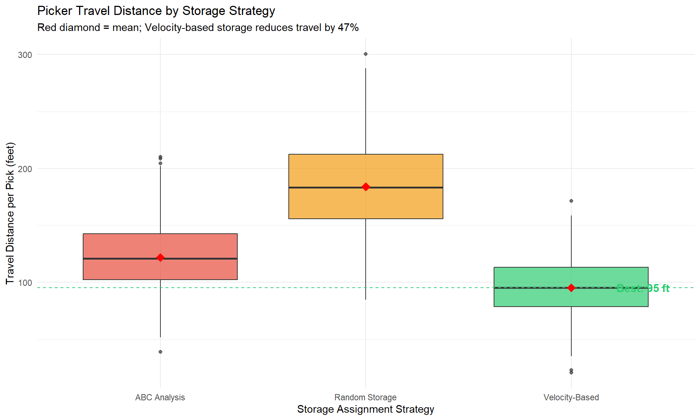
Figure 16.8: Impact of storage assignment on picker travel distance
Industry Application: Kuehne+Nagel used AnyLogic simulation to design a new warehouse processing 13,000 order lines per day. By testing different picking algorithms in simulation, they identified the optimal approach before building the physical facility, avoiding costly redesigns.
16.6.5 Autonomous Mobile Robots (AMRs) in Warehouses
Modern warehouses increasingly use autonomous mobile robots to reduce picker travel time. Instead of workers walking to products, robots bring shelving units to stationary pick stations.
# Simulate AMR performance
amr_counts <- c(5, 10, 15, 20, 25, 30, 35, 40, 45, 50)
fulfillment_times <- c(45, 28, 18, 13, 10.5, 9, 8.2, 7.8, 7.6, 7.5)
utilization <- c(98, 95, 88, 78, 68, 58, 52, 48, 45, 43)
amr_data <- data.frame(
AMRs = amr_counts,
Time = fulfillment_times,
Utilization = utilization
)
# Dual y-axis plot
coeff <- 0.5
ggplot(amr_data, aes(x = AMRs)) +
geom_line(aes(y = Time), color = "#3498DB", linewidth = 1.5) +
geom_point(aes(y = Time), color = "#3498DB", size = 3) +
geom_line(aes(y = Utilization * coeff), color = "#E74C3C", linewidth = 1.5, linetype = "dashed") +
geom_point(aes(y = Utilization * coeff), color = "#E74C3C", size = 3) +
geom_vline(xintercept = 25, linetype = "dotted", color = "#2ECC71", linewidth = 1.2) +
annotate("text", x = 27, y = 40, label = "Optimal\nPoint", color = "#2ECC71", fontface = "bold") +
scale_y_continuous(
name = "Fulfillment Time (minutes)",
sec.axis = sec_axis(~ . / coeff, name = "Robot Utilization (%)")
) +
labs(
title = "Finding the Optimal Number of Autonomous Mobile Robots",
subtitle = "Blue = Fulfillment time (lower is better); Red = Robot utilization (higher is better)",
x = "Number of AMRs"
) +
theme_minimal() +
theme(
axis.title.y.left = element_text(color = "#3498DB"),
axis.title.y.right = element_text(color = "#E74C3C")
)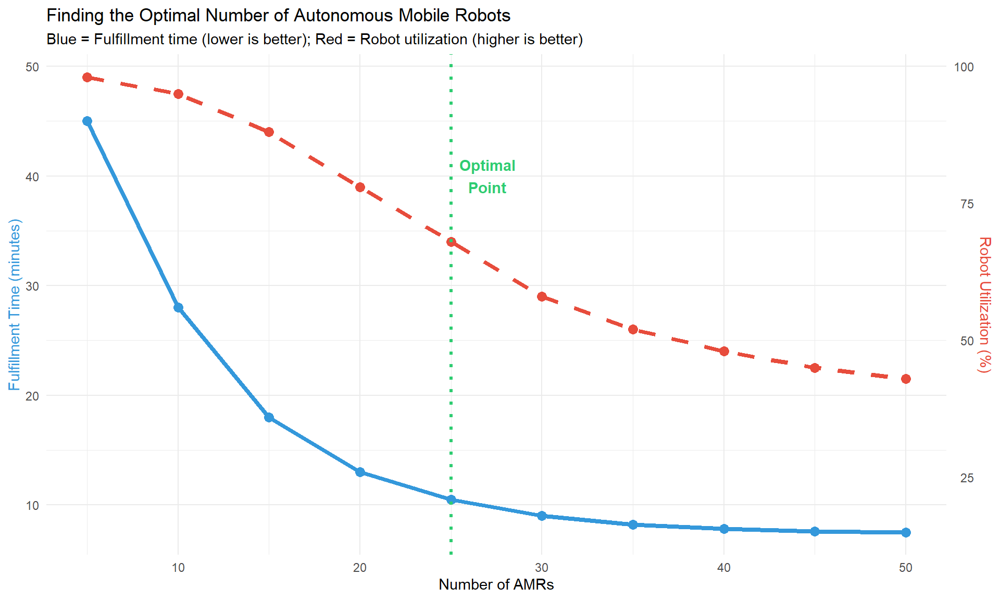
Figure 16.9: Simulation results: order fulfillment time vs. number of AMRs
This simulation reveals a classic trade-off: adding more robots reduces order fulfillment time but also decreases utilization (robots spend more time idle). The optimal point balances these factors based on business requirements.
Quick Check: 1. Why does adding more robots eventually show diminishing returns? 2. If robots cost $50,000 each and labor costs $25/hour, how would you calculate the breakeven point? 3. What other factors should be considered beyond raw cost?
16.7 Built-in AnyLogic Examples
AnyLogic includes numerous pre-built example models that serve as excellent learning resources and starting points for your own projects. Here are the key examples relevant to manufacturing and warehouse operations:
16.7.1 Manufacturing Examples
| Example Name | Location | What You’ll Learn |
|---|---|---|
| Job Shop | Help > Example Models > Manufacturing | Routing jobs through multiple machines, scheduling |
| Assembly Line | Help > Example Models > Manufacturing | Line balancing, takt time, bottleneck analysis |
| Flexible Manufacturing System | Help > Example Models > Manufacturing | Flexible routing, machine selection, setup times |
| Conveyor System | Help > Example Models > Material Handling | Conveyor design, merging, diverting, accumulation |
| AGV System | Help > Example Models > Material Handling | Vehicle dispatching, path planning, charging stations |
16.7.2 Warehouse and Logistics Examples
| Example Name | Location | What You’ll Learn |
|---|---|---|
| Warehouse | Help > Example Models > Logistics | Storage assignment, inventory management |
| Distribution Center | Help > Example Models > Logistics | Receiving, put-away, picking, shipping integration |
| Order Picking | Help > Example Models > Logistics | Picking route optimization, batch vs. single order |
| AS/RS System | Help > Example Models > Material Handling | Automated storage retrieval, crane sequencing |
| Cross-Docking | Help > Example Models > Logistics | Minimal storage, direct transfer operations |
Hands-On Activity: Open AnyLogic and navigate to Help > Example Models. Open the “Assembly Line” example and run it. Then: 1. Identify the bottleneck station (highest queue length) 2. Modify the process time for that station 3. Observe how throughput changes 4. Document your findings
16.8 Building Your First Model: Step-by-Step Tutorial
Let’s walk through building a simple but complete production line model from scratch.
16.8.1 Tutorial: Three-Station Production Line
Objective: Model a production line with three workstations and analyze throughput.
16.8.1.1 Step 1: Create a New Model
- Open AnyLogic
- File > New > Model
- Name it “ProductionLine_Tutorial”
- Select “Discrete Event” as the model type
16.8.1.2 Step 2: Add the Process Flow
From the Process Modeling Library, drag these elements onto the canvas in order:
- Source - Generates parts entering the system
- Queue - Holds parts waiting for Station 1
- Delay - Represents Station 1 processing time
- Queue - Holds parts waiting for Station 2
- Service - Represents Station 2 (requires a worker resource)
- Queue - Holds parts waiting for Station 3
- Delay - Represents Station 3 processing time
- Sink - Removes completed parts from the system
16.8.1.3 Step 3: Connect the Elements
Click on the output port of each element and drag to the input port of the next element. The flow should look like:
Source → Queue → Delay → Queue → Service → Queue → Delay → Sink16.8.1.4 Step 4: Configure Parameters
Click each element and set these properties:
Source:
- Arrivals defined by: Inter-arrival time
- Inter-arrival time: exponential(1) (1 part per minute on average)
Delays (Stations 1 and 3):
- Delay time: triangular(0.5, 0.8, 1.2) (minutes)
Service (Station 2):
- Delay time: triangular(0.6, 0.9, 1.5) (minutes)
- Requires a Resource Pool (add one and set capacity to 1)
Queues: - Maximum capacity: 10
16.8.1.5 Step 5: Add Statistics Collection
Add these statistics to track performance:
- TimeMeasureStart - After Source
- TimeMeasureEnd - Before Sink
- Dataset - To log throughput over time
16.8.1.6 Step 6: Run and Analyze
# Simulate expected results
set.seed(789)
time <- seq(0, 480, by = 1)
# Generate cumulative throughput
throughput <- cumsum(rpois(length(time), lambda = 0.85))
# Generate queue lengths
q1 <- pmax(0, rnorm(length(time), 1.5, 0.8))
q2 <- pmax(0, rnorm(length(time), 3.2, 1.2)) # Bottleneck
q3 <- pmax(0, rnorm(length(time), 0.8, 0.5))
tutorial_data <- data.frame(
Time = time,
Throughput = throughput,
Q1 = q1,
Q2 = q2,
Q3 = q3
)
p1 <- ggplot(tutorial_data, aes(x = Time, y = Throughput)) +
geom_line(color = "#2ECC71", linewidth = 1) +
geom_hline(yintercept = 400, linetype = "dashed", color = "red") +
annotate("text", x = 50, y = 420, label = "Target: 400", color = "red") +
labs(title = "Cumulative Throughput", x = "Time (min)", y = "Parts Completed") +
theme_minimal()
tutorial_long <- tutorial_data %>%
tidyr::pivot_longer(cols = c(Q1, Q2, Q3), names_to = "Queue", values_to = "Length")
p2 <- ggplot(tutorial_long, aes(x = Time, y = Length, color = Queue)) +
geom_line(alpha = 0.6) +
scale_color_manual(values = c("#3498DB", "#E74C3C", "#F39C12"),
labels = c("Before Station 1", "Before Station 2", "Before Station 3")) +
labs(title = "Queue Lengths", x = "Time (min)", y = "Parts Waiting") +
theme_minimal() +
theme(legend.position = "bottom")
gridExtra::grid.arrange(p1, p2, ncol = 2)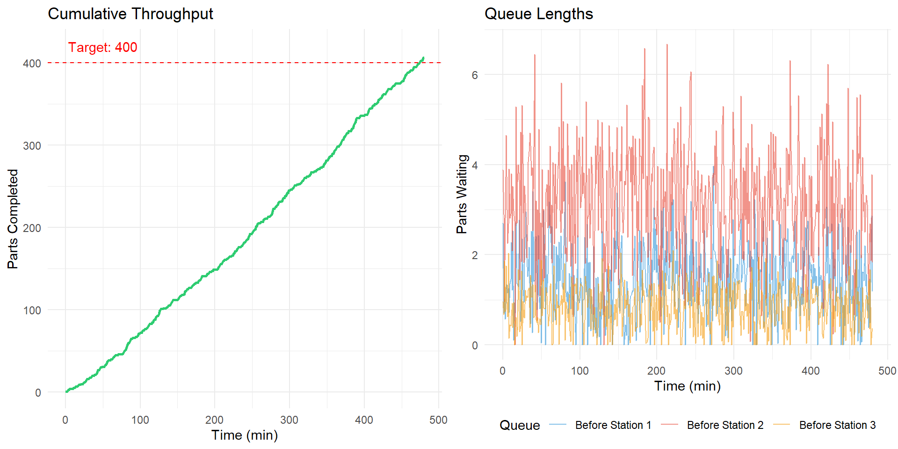
Figure 16.10: Expected results from tutorial model
Verify Your Model: After running, you should observe: - Approximately 400-420 parts completed in 480 minutes - Queue 2 (before Station 2) has the longest average length - The system is stable (queues don’t grow without bound)
16.9 Advanced Topics
16.9.1 3D Visualization
AnyLogic includes powerful 3D visualization capabilities that help communicate simulation results to stakeholders who may not understand abstract flowcharts.
Benefits of 3D visualization: - Easier validation with plant managers (“Does this look like our facility?”) - Executive presentations and funding requests - Training material for new employees - Virtual commissioning before physical construction
16.9.2 Integration with Real Data
Production simulations become more valuable when connected to real data:
- Historical data import: Load actual order data, machine logs, or production records
- Real-time dashboards: Connect to databases for live monitoring
- Digital twin operation: Mirror physical operations in real-time
16.9.3 Optimization Experiments
AnyLogic includes an Optimization experiment type that automatically searches for the best parameter values:
# Simulate optimization process
iterations <- 1:50
staff_levels <- c(
rep(5, 5), rep(7, 5), rep(6, 5), rep(8, 5), rep(7, 5),
rep(6, 10), rep(7, 5), rep(7, 5), rep(7, 5)
)
throughput <- c(
rnorm(5, 380, 10), rnorm(5, 445, 8), rnorm(5, 420, 9), rnorm(5, 450, 7), rnorm(5, 448, 7),
rnorm(10, 425, 8), rnorm(5, 450, 6), rnorm(5, 452, 5), rnorm(5, 455, 4)
)
opt_data <- data.frame(
Iteration = iterations,
Staff = staff_levels,
Throughput = throughput
)
opt_data$Best <- cummax(opt_data$Throughput)
ggplot(opt_data, aes(x = Iteration)) +
geom_point(aes(y = Throughput), alpha = 0.5, color = "#3498DB") +
geom_line(aes(y = Best), color = "#E74C3C", linewidth = 1.2) +
geom_hline(yintercept = 455, linetype = "dashed", color = "#2ECC71") +
annotate("text", x = 45, y = 460, label = "Optimal: 7 staff, 455 parts",
color = "#2ECC71", fontface = "bold") +
labs(
title = "Optimization Experiment: Finding Optimal Staffing",
subtitle = "Blue points = individual runs; Red line = best found so far",
x = "Iteration",
y = "Throughput (parts/shift)"
) +
theme_minimal()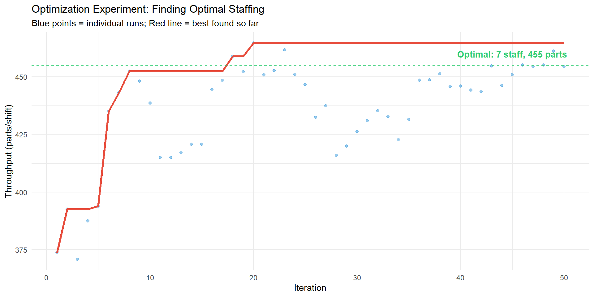
Figure 16.11: Optimization search finding the best staffing level
16.10 Key Takeaways
What We Learned:
Simulation enables risk-free experimentation - Test design changes in virtual environments before spending money on physical implementation
AnyLogic supports three paradigms - Discrete-event (for process flows), agent-based (for autonomous entities), and system dynamics (for strategic planning)
Manufacturing simulation identifies bottlenecks - Queue analysis reveals which stations limit throughput
Warehouse simulation optimizes picking - Compare strategies like batch picking, zone picking, and AMR deployment before implementation
Built-in examples accelerate learning - Start from AnyLogic’s example models to understand best practices
The value is in the “what-if” - Simulation’s true power is comparing scenarios to find optimal solutions
Key Equations: - Takt Time: Equation (16.1)
Before Moving On: - Can you explain when to use discrete-event vs. agent-based simulation? - Can you build a basic three-station production line in AnyLogic? - Can you identify how simulation could help in your workplace or industry?
16.11 Practice Problems
16.11.1 Problem 1: Takt Time Calculation
A refrigerator assembly plant operates two 8-hour shifts per day with a 30-minute lunch break per shift. Customer demand is 720 units per day.
- Calculate the takt time in seconds
- If the bottleneck station has a cycle time of 62 seconds, will they meet demand? Why or why not?
- Suggest two approaches to resolve the issue
16.11.2 Problem 2: Simulation Model Design
You are asked to simulate a paint shop with: - 3 spray booths operating in parallel - Conveyor system bringing parts from preparation area - Curing oven with 30-minute cycle time - Quality inspection with 5% rejection rate
- Sketch the simulation model structure
- List which AnyLogic libraries you would use
- Identify potential bottlenecks to investigate
16.11.3 Problem 3: Warehouse Picking Analysis
A warehouse uses single-order picking with 5 pickers. Each picker walks an average of 3 miles per 8-hour shift. The company is considering batch picking with specialized carts.
- If batch picking reduces travel by 35%, how many miles would be saved per picker per shift?
- If workers walk at 3 mph and pick items at a rate of 2 per minute while at a location, what percentage of time is currently spent walking?
- What information would you need to simulate this scenario in AnyLogic?
16.11.4 Problem 4: AMR Fleet Sizing
Using the graph in Figure ?? as a reference:
- If the company requires fulfillment time under 12 minutes, what is the minimum number of AMRs needed?
- What trade-off occurs when moving from 25 to 50 AMRs?
- If each AMR costs $50,000 and operates for 5 years, what is the daily cost per AMR?
Challenge Problem: Design a simulation experiment to determine the optimal number of pickers and AMRs for a warehouse with variable order volumes. The solution should: - Handle daily order volumes ranging from 5,000 to 20,000 lines - Meet a 2-hour fulfillment target - Minimize total labor and equipment costs
16.12 Further Resources
16.12.1 AnyLogic Official Resources
- AnyLogic University: Free online courses covering all simulation paradigms
- Example Models: Help > Example Models in AnyLogic software
- Cloud Platform: cloud.anylogic.com for running simulations online
16.12.2 Academic Resources
- Borshchev, A. (2013). The Big Book of Simulation Modeling. AnyLogic North America.
- Law, A.M. (2015). Simulation Modeling and Analysis (5th ed.). McGraw-Hill.
16.12.3 Industry Case Studies
- Mercedes-Benz Sprinter production optimization
- Kuehne+Nagel warehouse picking algorithm selection
- Tesla autonomous mobile robot deployment
Getting Started: Download the free Personal Learning Edition of AnyLogic from anylogic.com. It includes all features and example models—the only limitation is model size.